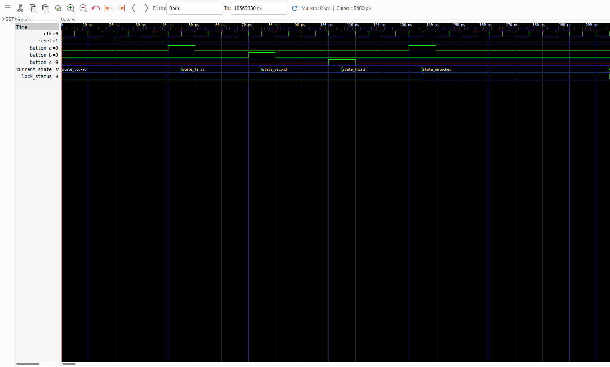
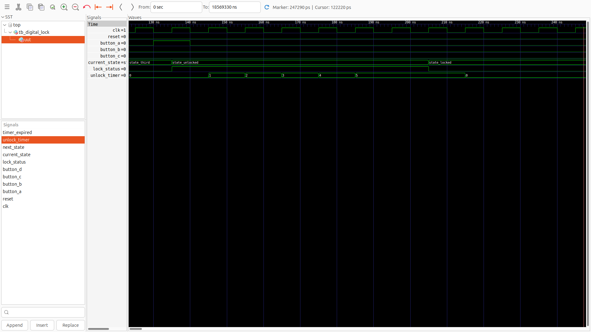

A Finite State Machine Implementation in VHDL
A hardware-based digital lock system requiring a specific 4-button sequence to unlock, implemented using finite state machine methodology.
The system comprises three primary VHDL modules integrated in a hierarchical design pattern.
Core finite state machine implementing the 5-state lock controller with auto-relock timer functionality.
156 lines | 4 processes
Counter-based debounce circuit with 2-stage metastability synchronizer and edge detection.
93 lines | 1 process
System integration module instantiating 4 debouncers and 1 FSM controller with configurable generics.
154 lines | Synthesizable
The lock controller implements a Moore-type FSM with 5 states, following the industry-standard 3-process pattern for reliable synthesis.
| State | Correct Input | Output |
|---|---|---|
| STATE_LOCKED | Button A | lock_status = '0' |
| STATE_FIRST | Button B | lock_status = '0' |
| STATE_SECOND | Button C | lock_status = '0' |
| STATE_THIRD | Button A | lock_status = '0' |
| STATE_UNLOCKED | — | lock_status = '1' |
Mechanical buttons exhibit contact bounce—rapid on/off transitions lasting 5-20ms. The debouncer module filters this noise and provides clean, single-cycle pulses to the FSM.
-- Edge detection: rising edge only
if button_stable =
'1'
and button_prev =
'0'
then
button_out <= '1';
else
button_out <= '0';
end if;
The waveform demonstrates how the debouncer transforms a noisy, bouncing button signal into a clean single-cycle pulse that the FSM can reliably process.
| Signal | Description |
|---|---|
button_in |
Raw input with bounce noise |
button_stable |
Filtered stable value |
button_out |
Single-cycle output pulse |
counter |
Stability counter value |
The FSM employs the industry-standard 3-process pattern: state register, next-state logic, and output logic, enhanced with a fourth process for the auto-relock timer.
-- State type definition
type
state_type
is ( STATE_LOCKED, STATE_FIRST,
STATE_SECOND, STATE_THIRD, STATE_UNLOCKED );
signal current_state :
state_type := STATE_LOCKED;
signal next_state :
state_type;
signal unlock_timer :
integer
range 0
to UNLOCK_TIME;
-- Process 1: State Register (Sequential)
state_register:
process(clk, reset)
begin
if reset =
'1'
then
current_state <= STATE_LOCKED;
elsif
rising_edge(clk)
then
current_state <= next_state;
end if;
end process;
-- Process 2: Next State Logic (Combinational)
next_state_logic:
process(current_state, button_A,
button_B, button_C, button_D)
begin
next_state <= current_state;
-- Default
case current_state
is
when STATE_LOCKED =>
if button_A =
'1'
then
next_state <= STATE_FIRST;
end if;
when STATE_FIRST =>
if button_B =
'1'
then
next_state <= STATE_SECOND;
elsif button_A =
'1'
or button_C =
'1'
or button_D =
'1'
then
next_state <= STATE_LOCKED;
end if;
-- ... additional states
end case;
end process;
Comprehensive verification was conducted using GHDL simulation with 5 testbenches covering unit testing, integration testing, coverage analysis, and edge case validation.
| Testbench | Purpose | Test Cases | Status |
|---|---|---|---|
| tb_digital_lock | FSM unit verification | 6 tests | All Passed |
| tb_top_level | Full system integration | 11 tests | All Passed |
| tb_fsm_coverage | State & transition coverage | 18 assertions | All Passed |
| tb_edge_cases | Boundary conditions | 22 assertions | All Passed |
| tb_debouncer | Debouncer unit verification | 4 tests | All Passed |
Signal waveforms captured during simulation demonstrate correct FSM behavior across all operational scenarios.
Shows state transitions during successful A→B→C→A sequence
Demonstrates automatic re-locking after timeout
Shows FSM returning to LOCKED state on incorrect button press
button_a, button_b,
button_d, current_state,
lock_status
lock_status remains '0' throughout (never
unlocks)
The design was verified for synthesizability using GHDL synthesis checking. Resource utilization is minimal, ensuring compatibility with any FPGA device.
| Parameter | Simulation | Hardware |
|---|---|---|
| DEBOUNCE_TIME | 10 cycles | 2,000,000 cycles |
| UNLOCK_TIME | 5 cycles | 500,000,000 cycles |
| Clock Frequency | N/A | 100 MHz |
| Debounce Period | ~100 ns | 20 ms |
| Unlock Duration | ~50 ns | 5 seconds |
Terminal output showing successful synthesis verification
./scripts/synth.shThis project successfully demonstrates the application of finite state machine methodology to implement a practical digital lock system in VHDL.
Terminal showing all tests passing
./scripts/test.sh --no-waveComplete source code, documentation, and test infrastructure available at:
pattern-based-digital-lock/